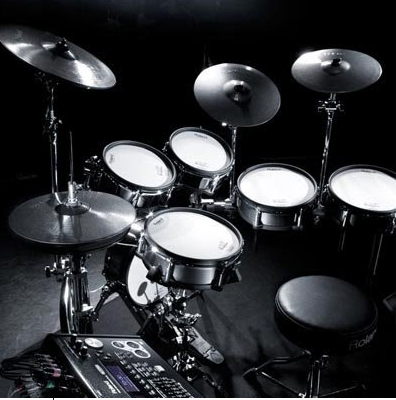

+38(051)234567
+38(051)234567
I'm hosted with GitHub Pages.
Работаем с 9:00 до 21:00
Следуй за своей мечтой
Классы инструментов
Гитара Cовременная музыкальная романтика
Для многих музыкантов гитара разделяет одиночество души, согревает в холодную пору. Ее хочется нежно прижать. Она позволяет открыть душу, передать эмоции. Ведь на протяжении всего времени существования этого инструмента его связывали с выраженными в музыке эмоциями: романтикой, любовной страстью, жестокостью и нежностью. Она способна изменить настроение, зажечь в сердцах огонь, покорить слушателей мелодией или риффом… Поэтому трудно представить современную группу без гитариста.
Гитара считается одним из самых доступных и привлекательных инструментов. С ней легко путешествовать, она доступна в обучении и не занимает столько места, как ударная установка или фортепиано. Но самое главное – она охватывает широчайший репертуар: гитарная классика, переложения академической музыки, рок, джаз, латина и многое другое. Гитара способна выразить глубину чувств и мыслей любого человека, прикоснувшегося к ней, желающего изучить её особенности и научиться на ней играть – стать Мастером.
Подробнее
Подробнее
Бас-гитараМеньше струн - меньше проблем.Хорошего басиста трудно найти и легко потерять...Басист (басизд, басмен, бассота, бастурбатор, бассивный гитараст, басюк, басарба) — музыкант, неотъемлемая часть ритм-секции. Именно эти люди, на пару с барабанщиками, создают движение в музыке. Каноничный басист играет на бас-гитаре.
Подробнее
Подробнее
Электро-Гитара Myzikalka предлагает индивидуальные уроки игры на электрогитаре для детей и взрослых. Отличительной чертой уроков в нашей школе является, индивидуальный подход к составлению программы и подбор произведений, песен с учетом Вашего любимого репертуара, а также авторские методики преподавания. Немаловажно, что уроки гитары отличаются по сути и содержанию в зависимости от возраста и подготовки ученика. Обучение проводится без вступительных экзаменов и без ограничения по возрасту.
Подробнее
Подробнее
Ударные Снимает стресс лучше спортзала, развивает мозг лучше математики. Единственный возможный негативный эффект от занятий на ударной установке – знакомство со всеми соседями в вашем доме, возможно даже с участковым. Поэтому не испытывайте судьбу и приходите на занятия в Рок Школу, здесь есть все необходимое для того, чтобы занятия проходили комфортно.
Подробнее
Подробнее

Клавишные Все известные композиторы прекрасно владели фортепиано, ведь это - универсальный инструмент. На нем можно играть любые произведения, предназначенные как для любого другого инструмента, так и для целой группы. Обучение игре на фортепиано дает глубокое понимание музыки и гармонии.
Некоторые ошибочно считают клавиши ненужным инструментом в рок-группе, однако, такой коллектив как "the Doors" обходились без бас-гитары, заменяя ее звучание клавишами, а знаменитых "Deep Purple" невозможно представить без их фирменных клавишных партий.
В Школе Рока вы не только сможете научиться играть на клавишных, но и получите навыки игры в составе музыкальной группы и отточите свое мастерство на отчетных концертах.
Подробнее
Подробнее
Контрабас является очень важным инструментом, потому что может брать низкие звуки, которые не под силу другим «собратьям», его используют для полноты звучания, чтобы покрыть весь диапазон: от самых высоких до самых низких (он с успехом берется за вторую задачу). Играть приходится стоя (иногда), но это не останавливает басистов. Несмотря на все трудности, этот музыкальный инструмент был и остается самым ярким представителем басовых струнных инструментов.
Подробнее
Подробнее
Испытай себя
ПЕРВЫЙ УРОК БЕСПЛАТНО!
О нас
Myzikalka — это современная музыкальная рок школа для детей и взрослых в г.Ирпень, где каждый может освоить игру на гитаре, бас-гитаре, укулеле, ударных, клавишных или научиться петь. Основателем проекта является мультиинструменталист, звукорежиссер и композитор — Дмитрий Дзюба. Он начал обучать игре на гитаре ещё в школьные годы и имеет немалый опыт за спиной как в обучении так и в Рок карьере на большой сцене. Всё это послужило идее о создания музыкального кружка, где ученик помимо уроков с преподавателем, будет иметь возможность играть в группе, выступать на концертах, записывать песни на студии.
Дзюба Дмитрий - человек-оркестр. Он с высшим музыкальным образованием умеет играть практически на всех инструментах. Это и струнные (скрипка, виолончель, контрабас), и все украинские народные инструменты эстрадного оркестра, этнические барабаны: кахон, джембе и… Список можно продолжать бесконечно. Общение с этим жизнерадостным и жизнелюбивым учителем всегда придаст вам хорошее настроение. Участник таких групп как ТОЛ, ПНД, Покруч, Галяк и других. Звукорежиссер, меломан и большой поклонник мотоциклов и автомобилей.
Подробнее
Подробнее
Наш богатый опыт
Тут должно быть очень много хвалебного текста про создание рок групп, про заслуги групп, где что играли где участвовали чё хотели и вообще... ну а пока что теория...:Все известные композиторы прекрасно владели фортепиано, ведь это - универсальный инструмент. На нем можно играть любые произведения, предназначенные как для любого другого инструмента, так и для целой группы. Обучение игре на фортепиано дает глубокое понимание музыки и гармонии.
Некоторые ошибочно считают клавиши ненужным инструментом в рок-группе, однако, такой коллектив как "the Doors" обходились без бас-гитары, заменяя ее звучание клавишами, а знаменитых "Deep Purple" невозможно представить без их фирменных клавишных партий.
В Школе Рока вы не только сможете научиться играть на клавишных